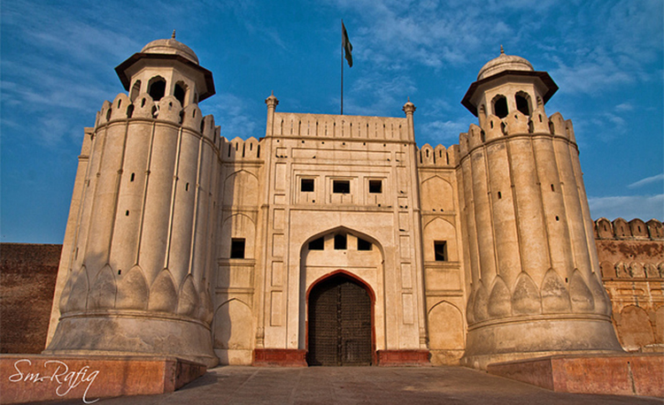

Faisal Mosque
The Faisal Mosque is a mosque located in Islamabad, Pakistan. It is the sixth-largest mosque in the world and the largest within South Asia, located on the foothills of Margalla Hills in Pakistan's capital city of Islamabad. The mosque features a contemporary design consisting of eight sides of concrete shell and is inspired by the design of a typical Bedouin tent. A major tourist attraction in Pakistan, the mosque is a contemporary and influential piece of Islamic architecture. Construction of the mosque began in 1976 after a $28 million grant from Saudi King Faisal, whose name the mosque bears. The unconventional design by Turkish architect Vedat Dalokay was selected after an international competition. Without a typical dome, the mosque is shaped like a Bedouin tent, surrounded by four 260 feet tall minarets. The design features eight-sided shell shaped sloping roofs forming a triangular worship hall which can hold 10,000 worshippers. Combined the structure covers an area of 33 acres, the mosque dominates the landscape of Islamabad.

Lahore Fort
The Lahore Fort is a citadel in the city of Lahore, Punjab, Pakistan. The fortress is located at the northern end of walled city Lahore, and spreads over an area greater than 20 hectares. It contains 21 notable monuments, some of which date to the era of Emperor Akbar. The Lahore Fort is notable for having been almost entirely rebuilt in the 17th century, when the Mughal Empire was at the height of its splendour and opulence. Though the site of the Lahore Fort has been inhabited for millennia, the first record of a fortified structure at the site was in regard to an 11th-century mud-brick fort. The foundations of the modern Lahore Fort date to 1566 during the reign of Emperor Akbar, who bestowed the fort with a syncretic architectural style that featured both Islamic and Hindu motifs. Additions from the Shah Jahan period are characterized by luxurious marble with inlaid Persian floral designs, while the fort's grand and iconic Alamgiri Gate was constructed by the last of the great Mughal Emperors, Aurangzeb, and faces the renowned Badshahi Mosque. After the fall of the Mughal Empire, Lahore Fort was used as the residence of Emperor Ranjit Singh, founder of the Sikh Empire.

Badshahi Mosque
The Badshahi Mosque is a Mughal-era congregational mosque in Lahore, capital of the Pakistani province of Punjab, Pakistan. The mosque is located west of Lahore Fort along the outskirts of the Walled City of Lahore, and is widely considered to be one of Lahore's most iconic landmarks. The Badshahi Mosque was constructed by the Mughal emperor Aurangzeb between 1671 and 1673. The mosque is an important example of Mughal architecture, with an exterior that is decorated with carved red sandstone with marble inlay. It remains the largest mosque of the Mughal-era, and is the second-largest mosque in Pakistan. After the fall of the Mughal Empire, the mosque was used as a garrison by the Sikh Empire and the British Empire, and is now one of Pakistan's most iconic sights.